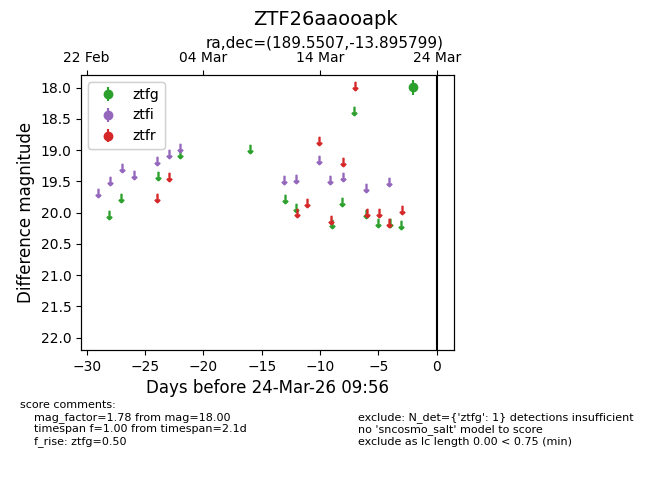
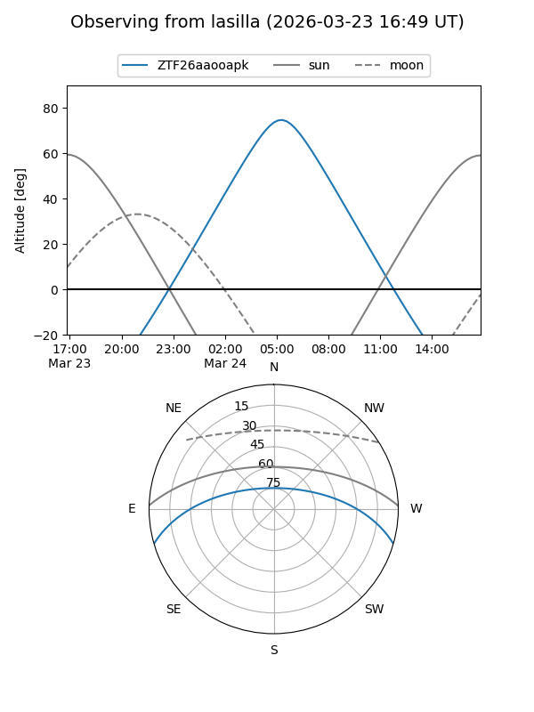
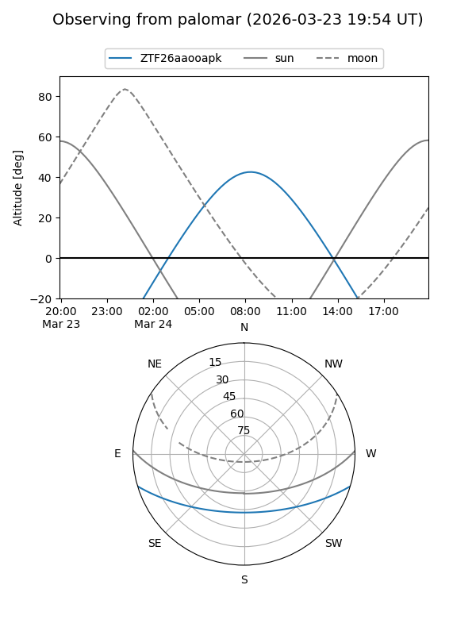

ZTF26aaooapk
Target ZTF26aaooapk at 2026-03-24 09:58
Aliases and brokers:
FINK: link
Lasair: link
ALeRCE: link
alt names
ZTF26aaooapk (ztf,fink_ztf)
Coordinates:
equatorial (ra, dec) = 189.5507,-13.89580
equatorial (HMS+DMS) = 12:38:12.17,-13:53:44.88
galactic (l, b) = (298.0476,+48.85039)
Flags:
Photometry:
last ztfg=18.00
1 ztfg detections
Lightcurve

Visibility


Additional plots